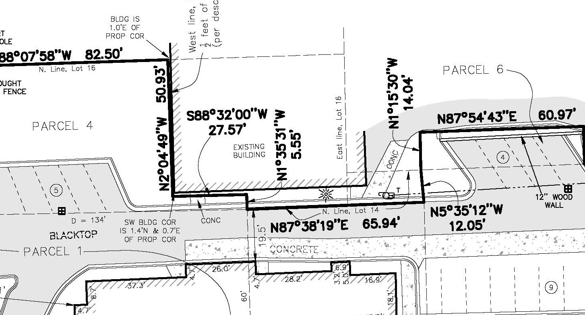
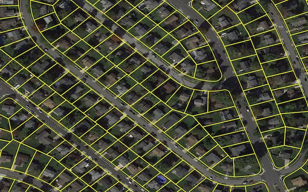
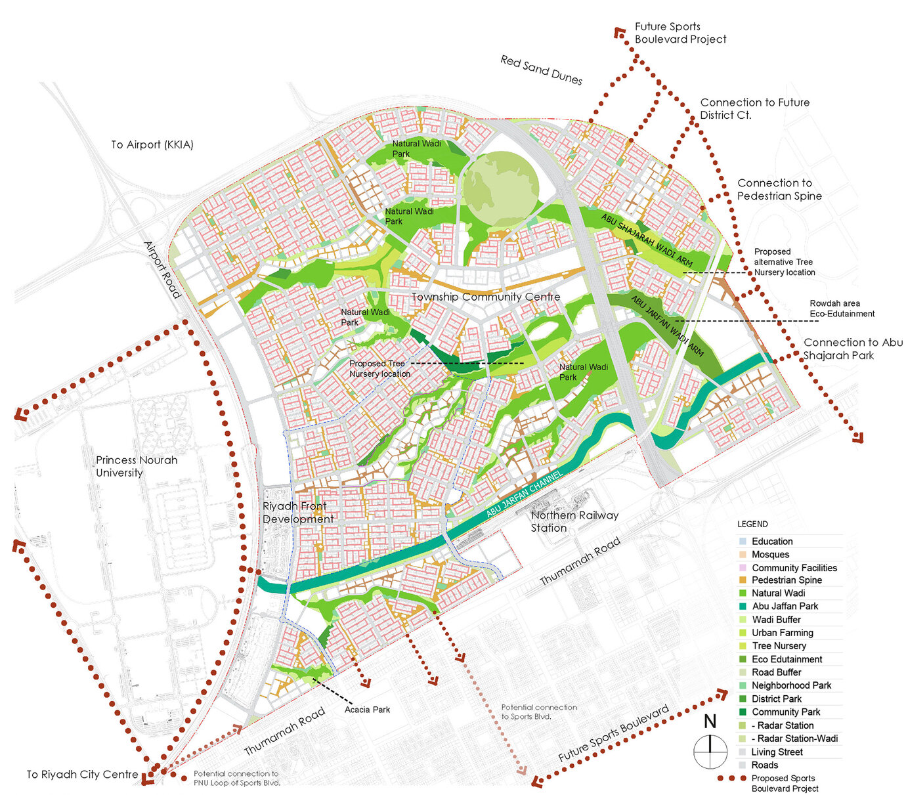
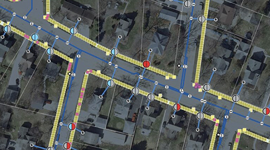
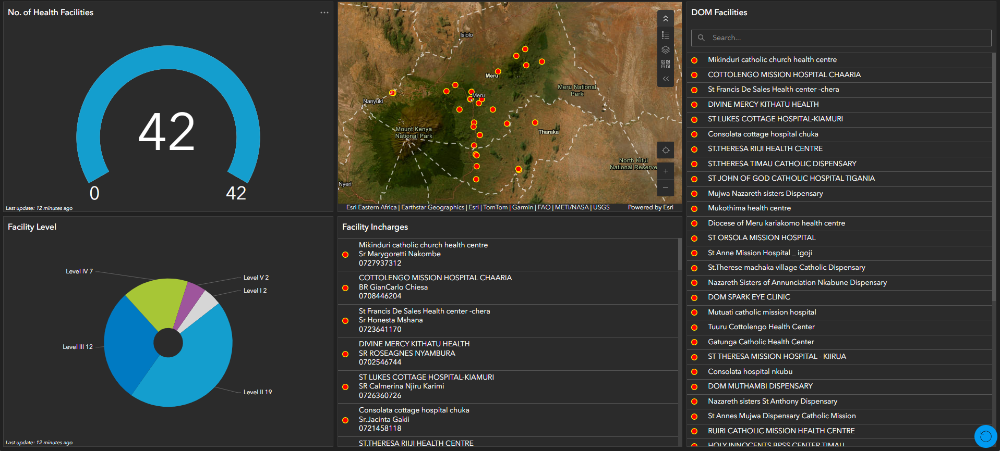
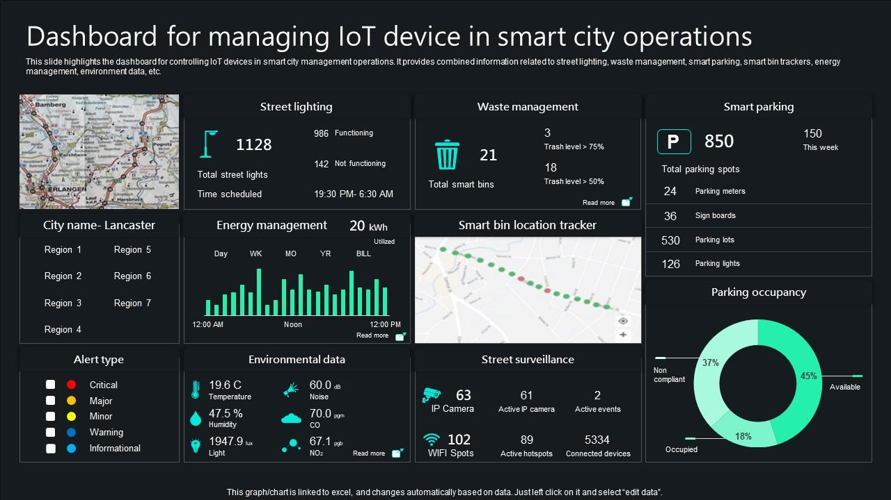
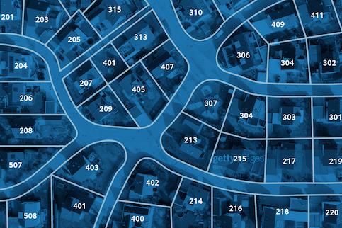
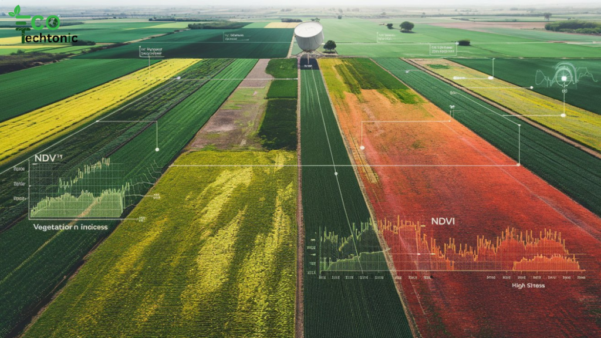
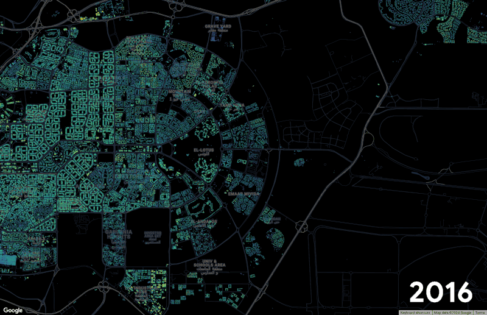

Projects & Portfolio
From UAV LiDAR industrial surveys to national GIS platforms — a selection of geospatial engagements delivered across Africa.

UAV LiDAR Mapping – Infinity Industrial Park
Full-area LiDAR and photogrammetric mapping for a 199.98-acre industrial park — delivering DEMs, DSMs, and orthomosaics with RTK/GCP ground control to support infrastructure planning and design.
Tree Inventory & Campus Topographic Survey
Directed a detailed 12-acre campus tree inventory and topographic survey for Flux Design Limited — spatial datasets for environmental management and campus development planning.

Engineering Surveying – Residential Development
Construction setting-out and building surveys for residential developments — providing precise control for foundation works, structural alignment, and finished level verification.
 Inspection
Inspection
Drone LiDAR & Thermal Inspection – 4 km Power Lines
UAV-based LiDAR and thermal imaging of a 4km high-voltage transmission corridor — identifying heat stress, insulator defects, conductor sagging, and encroachments to support maintenance decisions.

Drone LiDAR Stockpile Volume Survey – Cement Plant
Precision UAV LiDAR surveys with ground control for accurate bulk material stockpile volume computation — supporting production tracking and inventory management at a cement manufacturing facility.
 Infrastructure
Infrastructure
Engineering Surveys – 7 km Road, Sewer & Drainage
Comprehensive surveys for a 7km industrial road project — OGL topographic surveys, geometric design support, setting-out, excavation control, and finished level verification.

Outer Ring Road Assets Survey – Nairobi
Complete asset inventory and topographic survey of Nairobi's Outer Ring Road corridor for infrastructure planning and capital works programming.

Remote SensingDrone Mapping for Land Administration
High-resolution UAV mapping for land registration and title adjudication in peri-urban Kenya — enabling systematic land tenure documentation at scale.
 GIS & Planning
GIS & Planning
NaMSIP Resettlement Action Plans
Spatial analysis and resettlement planning support for the Nairobi Metropolitan Services Improvement Project, covering thousands of affected households.
 Utilities
Utilities
World Vision Hydrogeological Study
Comprehensive hydrogeological survey to guide rural water access infrastructure, supporting underserved communities across Kenya's arid counties.

Digital TransformationWater Utility Network Digitization
Full GIS-based asset inventory and network digitization for a major water utility — enabling proactive maintenance and dramatically reducing non-revenue water losses.
 Digital Transformation
Digital Transformation
Water Utility Asset Registry – Athi Water Works
Full GIS asset registry and utility network model for Athi Water Works Development Agency — mapping 5 dams (113.1M m³ capacity), 12 treatment plants, and 1,254+ service connections to power real-time dashboards, asset lifecycle management, and field operations via OrionGIS Cloud.
 Health GIS
Health GIS
Trans Nzoia County Health Services BIP
Real-time Business Intelligence Platform for Trans Nzoia County Government — baseline survey and geo-mapping of 178 health facilities across 5 PCNs, with live inpatient and outpatient data streaming into executive dashboards via OrionGIS Cloud and mobile field apps.

Digital TransformationHealth Services Digital Transformation – NGO Network
Geospatial digital transformation for an NGO health network — 42 facilities geo-mapped and integrated into OrionGIS for streamlined routine reporting, real-time KPI monitoring, disease surveillance, and operational decision-making across the region.

GIS PlatformNational Smart Geoportal
Nationwide GIS platform integrating IoT sensors, real-time traffic, utilities, and environmental data for smart city management and government decision-making.
 Health GIS
Health GIS
Cross-Border Disease Surveillance GIS
Real-time GIS system tracking disease outbreaks across East African borders, integrating health, mobility, and climate data for early warning and response.
 GIS & SDI
GIS & SDI
County Spatial Data Infrastructure
Built a full county-level SDI with geoportal, asset registers, and executive dashboards for land, water, and public health management — serving county government operations.

Land GISNational Land Parcel Registry
Secure, spatially-indexed land ownership platform providing transparent parcel records, title history, and boundary data for millions of registered parcels.

Remote SensingCrop Health Monitoring – Narok County
Multi-temporal satellite and UAV analysis of large-scale wheat and maize zones — generating NDVI, NDRE, and soil moisture indices for precision agronomic interventions.

Remote SensingUrban Expansion Study – Nairobi Metropolitan
Multi-decade land cover change detection and urban growth modelling for Nairobi's metropolitan zone — informing city-wide planning and infrastructure investment priorities.
LiDAR / EO
LiDAR Terrain Mapping – Suswa
Airborne LiDAR data acquisition and processing delivering bare-earth DTMs and high-density point clouds for geological assessment and pipeline route planning in the Suswa corridor.
Have a Project in Mind?
Tell us what you need — from a single survey to a national-scale GIS platform, we'll scope it and deliver.
Start a Conversation